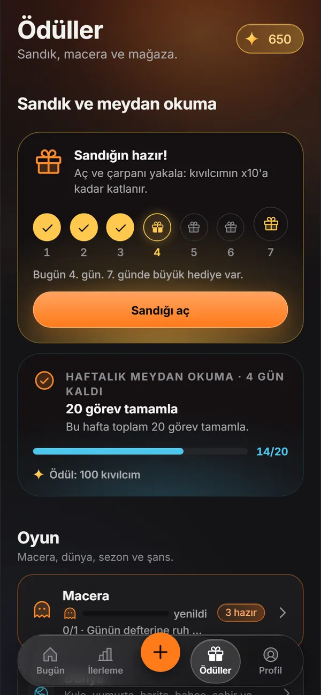

Bütün özellikler
Kıvılcım'daki her şey, ne işe yaradığıyla ve hangi cihazda çalıştığıyla. Hepsi ücretsiz; hesap ve internet gerekmez.
- Her yerde
- Android, web ve masaüstü
- Telefonda
- Telefon uygulamasında; şimdilik Android
- Android
- Yalnız Android'de
- Web
- Tarayıcıdaki web sürümünde
- iPhone ile gelecek
- iPhone sürümü yakında
Bugün
Sana uyan tekrar
Görevler her gün, haftada birkaç kez ya da belirli günlerde tekrarlanır. Bırakmak istediğin bir alışkanlığı da ekleyebilirsin; o zaman temiz günlerin sayılır.
Her yerdeKüçük başla, büyüt
Sayaç, zamanlayıcı, alt adım, mini versiyon ve haftadan haftaya artan hedef; zor bir günde küçük bir adım da sayılır.
Her yerdeTek dokunuş ya da kaydırma
Görevi tek dokunuşla ya da sağa kaydırarak tamamla, sola kaydırarak jokerle atla; liste birkaç saniyede biter.
Her yerdeBugün yörüngesi
Kıvı ortada durur, bugünün görevleri çevresinde baloncuk olarak yavaşça döner ve süzülür. Dokunmak görevi tamamlar, basılı tutmak seçenekleri açar; Kıvı'nın çevresindeki halka günün ilerlemesini gösterir ve her görev bitince tam kapanır. Görevler sığmazsa son baloncuk “+N” olur ve listeyi açar.
Her yerdeSırada kartı
Ana ekranın altında aynı anda yalnız bir kart durur: yeni açılan bölüm, hatırlatma sorusu, hazır sandık, mektup, akşam günü kapatma. Ana ekran kalabalıklaşmaz.
Her yerdeGünün adımı
Ana ekranın başlığında “Bugün 4.213 adım attın” görünür. İzin ilk görevini tikledikten sonra bir kez sorulur; vermezsen ya da telefonda adım sayar yoksa satır hiç çıkmaz.
iPhone ile gelecekSaatinde hatırlatma
Görev başına 15 dakika önce haber, 60 dakika sonra “yaptın mı?”. Bildirim biçimi normal, nazik ya da günde tek özet olabilir; hatırlatma seni boğmaz.
TelefondaKonum hatırlatması
Seçtiğin yere varınca haber verir; spor salonuna girince spor görevin aklına gelir.
Telefonda, arka planda daWeb: uygulama açıkkenTakvime aktar
Görevlerini kullandığın takvim uygulamasına aktarırsın; günün planı tek yerde durur.
Her yerdeQR ve NFC etiketiyle tik
Bir QR etiketi yazdırıp buzdolabına yapıştır; okutunca görev tiklenir. Aynı bağlantı bir NFC etiketine de yazılabilir.
Telefon uygulamasıylaWeb sürümüyleNFC yazma: Android Chrome, betaEğer–sonra
“Kahvemi içince” gibi bir tetikleyici, yeni alışkanlığı zaten yaptığın bir şeyin arkasına bağlar; hatırlamak kolaylaşır.
Her yerdeKötü günde sade liste
Zor bir günde en kolay görevler öne çıkar, gerisi toplanır. Yeni başlayanda bölümler günden güne açılır; ilk gün her şey birden gelmez.
Her yerde
Seri
5 alev kademesi
Seri büyüdükçe alevin rengi değişir: 7, 30, 100 ve 365. günlerde yeni bir kademe. Uzun bir serinin ne kadar yol aldığını renkten anlarsın.
Her yerdeSeriyi koru
Dondurucu (en çok 3), seri kalkanı, tatil modu ve seri kurtarma; tek bir kaçan gün aylarca süren seriyi silmez.
Her yerdeMezun et, yeni sezon başlat
Oturan bir alışkanlığı mezun edersin. Yeni sezonda sayaçlar sıfırlanır, geçmişin silinmez.
Her yerdeKutlama ve gün kapanışı
Kademe atladığında ve her yeni seri gününde bir kutlama; akşam da günü toparlayan bir özet.
Her yerdeSuçlamayan dil
Seri kırılınca kızmaz; ne kadar tutarlı olduğunu gösterir: “son 30 günde 27 gün, %90”. Koç tonunu sen seçersin: Nazik arkadaş, Sert koç ya da Esprili.
Her yerde
- Turuncu Alevİlk günden başlar.
- Altın Alev7. günde.
- Mavi Plazma30. günde.
- Mor Nova100. günde.
- Beyaz Yıldız365. günde.
Oyun
Kıvılcım ve bonuslar
Görev başına 10 kıvılcım. Kusursuz gün, erken kuş (05.00–09.00), günün yıldızı (×3) ve zor görev bonusu; emeğin görünür olur.
Her yerdeÖdüller ve mağaza
Ödüller sekmesinde sandık, haftalık meydan okuma, macera, dünya, sezon ve şans durur; altında mağaza: görev jokeri, güç iksiri ve seri kalkanı. Hepsi kıvılcımla alınır; parayla alınan hiçbir şey yok.
Her yerdeKozmetikler
4 kozmetik tema (Synthwave, Buzul, Orman, Lav); konfeti, alev ve arka plan; satır, düğme ve söz kaplaması; avatar ve kostüm, isim efekti ve çerçeve. Günün indirimi ve eşya birleştirme de var.
Her yerdeTik sesi: web ve masaüstüŞans köşesi
Şans çarkı, gizemli kutu ve faizli kıvılcım kumbarası; biriktirdiğin kıvılcım da büyür.
Her yerdeSandık şeridi ve çarpan
7 günlük sandık şeridinde her gün bir sandık; göstergeyi x1, x2, x4 ya da x10'da durdur. Altın tik, kıvılcım yağmuru ve mutlu saat de sürpriz olarak gelir.
Her yerdeMacera
Yavru ejderha, haftalık boss ve sezon yolu. Tek yetenek ağacında 3 katmanda 6 güç açılır; haftalık meydan okuma ve kendi koyduğun gerçek hayat ödülleri de burada.
Her yerdeDünya
Kule, yumurta, harita, alışkanlık bahçesi, şehir ve alışkanlık kartları; görev yaptıkça büyüyen küçük bir dünya.
Her yerdeRozetler ve unvanlar
33 rozet (4'ü gizli), Kıvılcım'dan Süpernova'ya 9 seviye unvanı ve rozetlerle açılan unvanlar. Yıl sonunda “Kıvılcım Wrapped” yılının hikâyesini anlatır.
Her yerde

Kendini tanı
Grafik, takvim ve rekorlar
Haftalık grafik, 12 aylık ısı haritası, takvim, tahmin ve rekorlar; nerede olduğunu ve nereye gittiğini tek bakışta görürsün.
Her yerdeAylık karne ve alışkanlık gücü
Her alışkanlığın ne kadar oturduğunu ay ay gösterir.
Her yerdeÖrüntüler ve zor gün öngörüsü
En iyi saatlerini bulur, zorlanabileceğin günü önceden söyler; planını ona göre kurarsın.
Her yerdeKıvılcım ekonomisi
Kıvılcımının nereden gelip nereye gittiğini gösteren ekran.
Her yerdeOtomatiklik ölçer
Bir alışkanlığın ne kadar kendiliğinden olduğunu kısa sorularla ölçer; oturdu mu, hâlâ çaba mı istiyor, görürsün.
Her yerde
Ritüeller
Günlük defter
Ruh hâli, niyet, şükür ve soru sormayan “sessizce yaz” sayfası. Sesli günlük tarayıcı desteğine bağlı: Chrome ve Safari'de var, Firefox'ta yok.
Her yerdeSesli günlük: tarayıcıya bağlıSana dair olanlar
Gelecekteki sana mektup, söz defteri, hayal panosu ve doğum günü sürprizi; neden başladığını unutmazsın.
Her yerdeNefes ve Pomodoro
Nefes egzersizi, odak turu ve geri sayım; nefes, günlük ya da süreli göreve dokununca aracı açılır, bitince görev tiklenir.
Her yerdeDönem paketleri ve başlangıç testi
5 dönem paketi: Yeni Yıl Kararları, Kış Enerjisi, Sınav Dönemi, Yaz Formu ve Okula Dönüş. Başlangıç testi beş kısa soruyla sana uyan bir başlangıç önerir.
Her yerde
9 hazır program
- 10 günde su dengesi10 gün
- 14 günde sakin zihin14 gün
- 21 günde erken kalkma21 gün
- 21 günde derin odak21 gün
- 4 haftada harekete geç28 gün
- 28 günde derin uyku28 gün
- 30 günde okuma alışkanlığı30 gün
- 30 günde dik duruş30 gün
- 66 günde kalıcı alışkanlık66 gün
Paylaş
Kartlar
Seri kartı, haftalık özet, karne hikâyesi ve başarı sertifikası; emeğini bir görselle paylaşırsın.
Her yerdeBirlikte
QR ile arkadaş düellosu, paket paylaşma ve ortak meydan okuma; hesap açmadan, bir kodla.
Her yerdeAlkış gönder
Puansız bir destek: yarış ya da kıyas yok, yalnız cesaret.
Her yerde
Aile, yedek ve güvenlik
Aile profilleri ve çocuk modu
Her aile üyesi kendi profilini açar. Çocuk modunda mağaza, paylaşım ve dış bağlantılar kapanır; çıkmak için ebeveyn kapısı gerekir.
Her yerdeKilit
PIN kilidi her yerde. Android'de parmak izi de olur; Face ID iPhone sürümüyle gelecek.
PIN: her yerdeParmak izi: AndroidFace ID: iPhone ile gelecekYedekle ve geri yükle
Dosya, pano ya da CSV. Her gün kendiliğinden yerel bir yedek alınır; telefonda istersen bulut klasörüne de otomatik yazılır.
Her yerdeBulut klasörü: telefondaGizlilik merkezi
Ne saklandığını ve hangi iznin neden istendiğini gösterir; her şeyi tek yerden silebilirsin.
Her yerdeGeri bildirim
Uygulamanın içinden hata bildir ya da öneri gönder. Görev adların ve defterin mesaja eklenmez.
Her yerde
Görünüm ve erişilebilirlik
6 tema seçeneği
Otomatik (cihazına uyar), Gece, AMOLED, Gündüz, Kutup Işığı ve Sakura; gözüne hangisi iyi geliyorsa.
Her yerdeRahat kullanım
Sade hareket, renk körü dostu işaretler, tek elle kullanım, saate göre gökyüzü ve gece yumuşatma.
Her yerdeYazı boyu ve titreşim
Web ve masaüstünde 3 yazı boyu; telefonda uygulama sistemin yazı boyuna uyar. Telefonda 4 titreşim düzeyi.
Yazı boyu: web ve masaüstüTitreşim: telefondaDüzen
Toplu düzenleme ve görev arşivi; listen kalabalıklaşınca toparlaman kolaylaşır.
Her yerdeDil
Türkçe ve İngilizce; ilk açılışta telefonun diline uyar.
Her yerdeiOS ayarlarına uyum
iOS'un Saydamlığı Azalt ve Kontrastı Artır ayarlarına uyum iPhone sürümüyle gelecek.
iPhone ile gelecek
Her cihazda
Widget ve kilit ekranı sayacı
Ana ekran widget'ı serini, ilerlemeni ve bekleyen görevleri gösterir; kilit ekranı sayacı beta.
AndroidHızlı eylemler
Web sürümünü ana ekrana ekleyince simgesinden hızlı eylemlere ulaşırsın.
Web: ana ekrana ekleninceSesli asistan kısayolları
Uygulamada adım adım kurulum rehberi var; kısayol telefonda uygulamayı, bilgisayarda web sürümünü açar.
Telefon uygulamasıylaWeb sürümüyleAna ekrana ekle
Web sürümü kurulum istemez; tarayıcıdan ana ekrana eklenir.
WebAdım sayar görevleri
Adım görevleri kendiliğinden tiklenir; beta, uygulama açıkken çalışır.
Android, betaKenar çubuğu ve kısayollar
Geniş ekranda kenar çubuklu düzen ve klavye kısayolları: Ctrl/⌘ + N yeni görev, Ctrl + 1–4 bölümler, Ctrl + , ayarlar, Esc geri.
WebMasaüstüiPhone
iPhone sürümü yakında, App Store ve TestFlight üzerinden. Face ID, Siri ve iOS ayarlarına uyum onunla gelecek; o zamana kadar web sürümü Safari'de çalışır.
iPhone ile gelecek